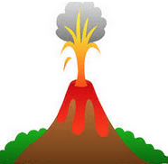
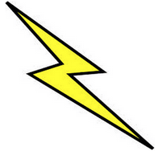
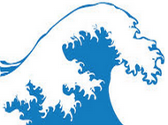
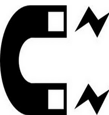
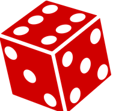

Choose 3 out of 4 moves to use for the battle
   
(examples of selection AFTER they are clicked:)
(after 2 selections in a row (or for ? after 1 time) it will ask for cooldown)
(main round screen)
| Volcano | Lightning | Water | Magnetic Field | |
|---|---|---|---|---|
| Volcano | -2 damage to both | testing | Seattle | 33% chance reflect, cancel or fail |
| Lightning | Eddy | Johnston | Palo Alto | 33% chance reflect, cancel or fail |
| Water | Eddy | Johnston | Palo Alto | 33% chance reflect, cancel or fail |
| Magnetic Field | 33% chance reflect, cancel or fail | 33% chance reflect, cancel or fail | 33% chance reflect, cancel or fail | Nothing |